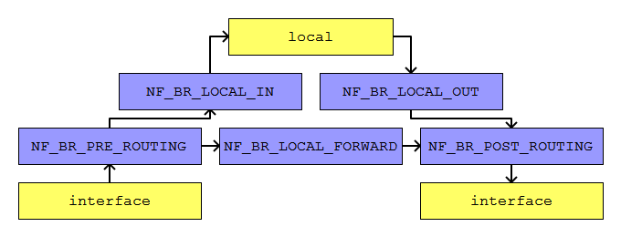

linux kernel netfilter bridge hook (linux kernel 3.2) 的使用筆記.
需要的標頭檔 :
#include <linux/netfilter_bridge.h>
註冊掛勾函式需要使用的結構.
struct nf_hook_ops
需要設定 struct nf_hook_ops 的結構成員.
pf
要使用的協定, bridge 使用 PF_BRIDGE.
hooknum
要掛勾的位置.
| NF_BR_PRE_ROUTING |
決定封包路由目的之期
|
| NF_BR_LOCAL_IN |
封包是給本地的
|
| NF_BR_LOCAL_OUT |
從本地送出的封包
|
| NF_BR_LOCAL_FORWARD |
封包在 pre-routting 的點被判定是往其他介面轉送的
|
| NF_BR_POST_ROUTING |
決定封包路由目的之後
|
priority
netfilter hook 允許多個函式掛勾在同一個位置, 設定函式的優先等級.
| NF_BR_PRI_FIRST |
| NF_BR_PRI_NAT_DST_BRIDGED |
| NF_BR_PRI_FILTER_BRIDGED |
| NF_BR_PRI_BRNF |
| NF_BR_PRI_NAT_DST_OTHER |
| NF_BR_PRI_FILTER_OTHER |
| NF_BR_PRI_NAT_SRC |
| NF_BR_PRI_LAST |
hook
指定要掛勾的函式, 函式原型是 :
unsigned int hook(
unsigned int hooknum,
struct sk_buff *skb,
const struct net_device *in,
const struct net_device *out,
int (*okfn) (struct sk_buff *))
之後註冊函式.
nf_register_hook
| 函式參數 |
struct nf_hook_ops *
reg
|
要處理的掛勾資料
|
例如 :
struct nf_hook_ops br_hook_forward;
memset(&br_hook_forward, 0, sizeof(br_hook_forward));
br_hook_forward.pf = PF_BRIDGE;
br_hook_forward.hooknum = NF_BR_FORWARD;
br_hook_forward.priority = NF_BR_PRI_FIRST;
br_hook_forward.hook = br_forward_handle;
if(nf_register_hook(&br_hook_forward) < 0)
printk(KERN_ERR "call nf_register_hook() fail");
解除註冊方法.
nf_unregister_hook
| 函式參數 |
struct nf_hook_ops *
reg
|
要處理的掛勾資料
|
例如 :
nf_unregister_hook(&br_hook_forward);
掛勾函式的參數和回傳值的意義.
unsigned int hook(
unsigned int hooknum,
struct sk_buff *skb,
const struct net_device *in,
const struct net_device *out,
int (*okfn) (struct sk_buff *))
| 函式參數 |
unsigned int
hooknum
|
同一個處理函式可以掛勾在不同的位置 (例如掛在 NF_BR_LOCAL_IN, NF_BR_LOCAL_OUT),
hooknum 記錄是從哪個點 (NF_BR_LOCAL_IN, NF_BR_LOCAL_OUT) 呼叫此函式
|
struct sk_buff *
skb
|
封包資料
|
const struct net_device *
in
|
封包從哪個網路設備進入
|
const struct net_device *
out
|
封包會往哪個網路設備出去
|
int *
okfn
|
處理完 netfilter hook 函式後要呼叫哪個函式處理
|
| 函式返回值 |
| NF_DROP |
掛勾函式通知丟棄此封包, 不會再繼續 netfilter 的流程.
|
| NF_ACCEPT |
掛勾函式通知允許此封包, 但是還是會繼續 netfilter 的流程 (表示會被其他掛勾函式處理).
|
| NF_STOLEN |
掛勾函式通知丟棄此封包, 不會再繼續 netfilter 的流程,
和 NF_DROP 不同的地方在於 kernel 會把封包的控制權交由掛勾函式,
表示掛勾函式需要自己使用 kfree_skb() 釋放封包.
|
| NF_QUEUE |
掛勾函式通知將此封包放入其他列隊等待處理.
|
| NF_REPEAT |
掛勾函式通知將此封包重新走一遍 netfilter 流程.
|
| NF_STOP |
掛勾函式通知允許此封包, 和 NF_ACCEPT 不同的地方在於不會繼續 netfilter 的流程
(表示不會被其他掛勾函式處理).
|
在核心模組使用範例 :
#include <linux/init.h>
#include <linux/kernel.h>
#include <linux/module.h>
#include <linux/netfilter_bridge.h>
#define FILE_NAME (strrchr(__FILE__, '/') ? strrchr(__FILE__, '/') + 1 : __FILE__)
#define DMSG(msg_fmt, msg_args...) \
printk(KERN_INFO "%s(%04u): " msg_fmt "\n", FILE_NAME, __LINE__, ##msg_args)
struct nf_hook_ops br_hook_local_in, br_hook_local_out, br_hook_forward;
unsigned int process_bridge_local_handle(
unsigned int hooknum,
struct sk_buff *skb,
const struct net_device *in,
const struct net_device *out,
int (*okfn) (struct sk_buff *)
{
// process_bridge_local_handle 掛勾在 NF_BR_LOCAL_IN 和 NF_BR_LOCAL_OUT,
// 使用 hooknum 可以知道函式是從哪個點被呼叫.
DMSG("netfilter bridge hook local, hooknum = %u", hooknum);
return NF_ACCEPT;
}
unsigned int process_bridge_forward_handle(
unsigned int hooknum,
struct sk_buff *skb,
const struct net_device *in,
const struct net_device *out,
int (*okfn) (struct sk_buff *)
{
DMSG("netfilter bridge forward");
return NF_ACCEPT;
}
static int __init main_init(
void)
{
// 掛勾在 NF_BR_LOCAL_IN.
memset(&br_hook_local_in, 0, sizeof(br_hook_local_in));
br_hook_local_in.pf = PF_BRIDGE;
br_hook_local_in.hooknum = NF_BR_LOCAL_IN;
br_hook_local_in.priority = NF_BR_PRI_FIRST;
br_hook_local_in.hook = process_bridge_local_handle;
if(nf_register_hook(&br_hook_local_in) < 0)
{
DMSG("call nf_register_hook(NF_BR_LOCAL_IN) fail");
goto FREE_01;
}
// 掛勾在 NF_BR_LOCAL_OUT.
memset(&br_hook_local_out, 0, sizeof(br_hook_local_out));
br_hook_local_out.pf = PF_BRIDGE;
br_hook_local_out.hooknum = NF_BR_LOCAL_OUT;
br_hook_local_out.priority = NF_BR_PRI_FIRST;
br_hook_local_out.hook = process_bridge_local_handle;
if(nf_register_hook(&br_hook_local_out) < 0)
{
DMSG("call nf_register_hook(NF_BR_LOCAL_OUT) fail");
goto FREE_02;
}
// 掛勾在 NF_BR_LOCAL_FORWARD.
memset(&br_hook_forward, 0, sizeof(br_hook_forward));
br_hook_forward.pf = PF_BRIDGE;
br_hook_forward.hooknum = NF_BR_LOCAL_FORWARD;
br_hook_forward.priority = NF_BR_PRI_FIRST;
br_hook_forward.hook = process_bridge_forward_handle;
if(nf_register_hook(&br_hook_forward) < 0)
{
DMSG("call nf_register_hook(NF_BR_LOCAL_FORWARD) fail");
goto FREE_03;
}
return 0;
FREE_03:
nf_unregister_hook(&br_hook_local_out);
FREE_02:
nf_unregister_hook(&br_hook_local_in);
FREE_01:
return 0;
}
static void __exit main_exit(
void)
{
nf_unregister_hook(&br_hook_forward);
nf_unregister_hook(&br_hook_local_out);
nf_unregister_hook(&br_hook_local_in);
return;
}
module_init(main_init);
module_exit(main_exit);
MODULE_LICENSE("GPL");
MODULE_DESCRIPTION("example");
封包在 netfilter bridge hook 中移動的流程.
